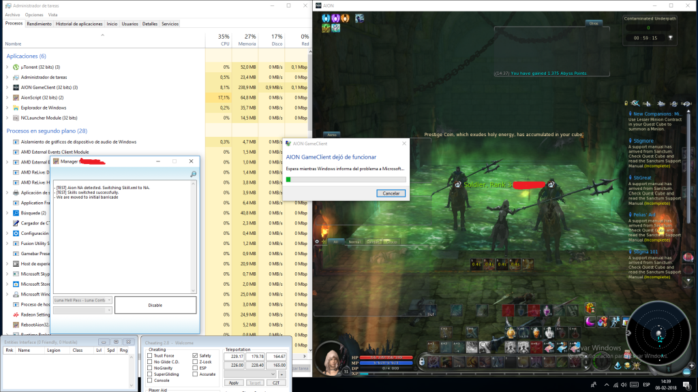

Page 1 of 2
AionInterface.dll 07.02.2108 EU & NA
Posted: Wed Feb 07, 2018 3:30 pm
by agonic
Some of conditional skills still dont work. Been waiting for the Nucular to fix it
Re: AionInterface.dll 07.02.2108 EU & NA
Posted: Wed Feb 07, 2018 7:26 pm
by pawelgbw
Thank you
Re: AionInterface.dll 07.02.2108 EU & NA
Posted: Thu Feb 08, 2018 3:56 am
by creatine
thanks. the sorcerer thing works now. but this patch is a bit buggy i guess. i crashed 7 times in 10 minutes lol.
need a proper update form nucular soon
Re: AionInterface.dll 07.02.2108 EU & NA
Posted: Thu Feb 08, 2018 4:06 am
by Lechon
I have the same problem NA
Re: AionInterface.dll 07.02.2108 EU & NA
Posted: Thu Feb 08, 2018 9:21 am
by agonic
Never crash here, sorry then
Re: AionInterface.dll 07.02.2108 EU & NA
Posted: Thu Feb 08, 2018 1:27 pm
by creatine
crashes especially frequent in luna instance using the luna script
if using it in luna, guaranteed minimum 3 crashes in 2 minutes
Re: AionInterface.dll 07.02.2108 EU & NA
Posted: Thu Feb 08, 2018 1:45 pm
by Lechon
Luna and kromede's trial
Re: AionInterface.dll 07.02.2108 EU & NA
Posted: Thu Feb 08, 2018 4:00 pm
by robertgigant
very high CPU and lag consumption in aion EU I have i5 -6400 Win 10 PRO 64 bit

- Szkic.png (32.18 KiB) Viewed 174 times
Re: AionInterface.dll 07.02.2108 EU & NA
Posted: Thu Feb 08, 2018 5:45 pm
by cooco
I'm not sure but SetCamera doesn't work
Re: AionInterface.dll 07.02.2108 EU & NA
Posted: Thu Feb 08, 2018 5:48 pm
by Lechon
This is a screenshot with more information, greetings.
